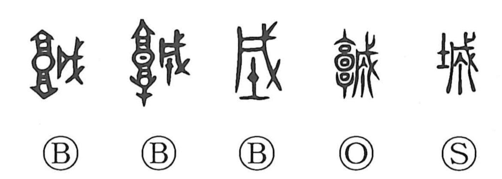

城

Kun: shiro, kizuku | On: jo
castle ・ fortress ・ to build
Explanation
城 combines 土, an earthen wall, with the sound element 成. Older forms use a plan of the fortified enclosure, with lookout towers at its north and south sides. 成 shows a weapon furnished with ritual adornment, used in purification and defence.
城 therefore names a fortified place whose walls have been ritually secured as well as physically armed. The word can refer to the enclosing rampart, the protected settlement within it, or the act of building such defences.
From the fortified city come the later senses of castle and stronghold. The character keeps both aspects of the enclosure: a constructed wall around the inhabitants and a protected boundary intended to exclude hostile powers.